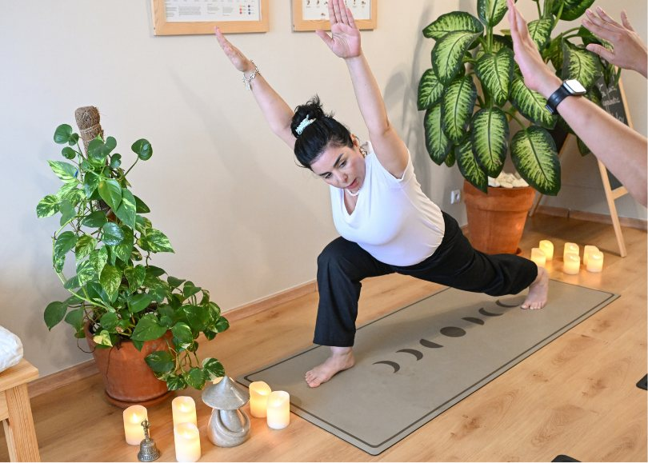
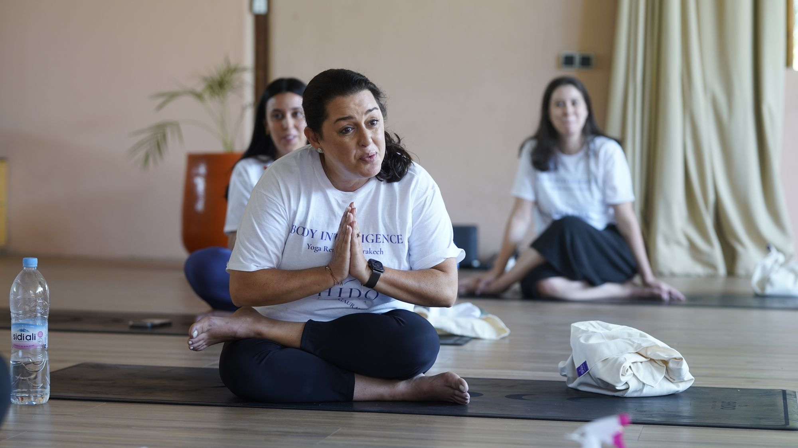
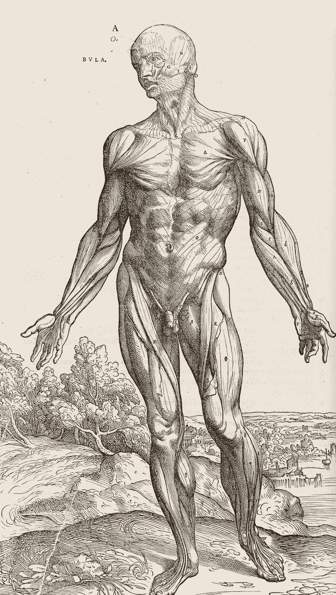
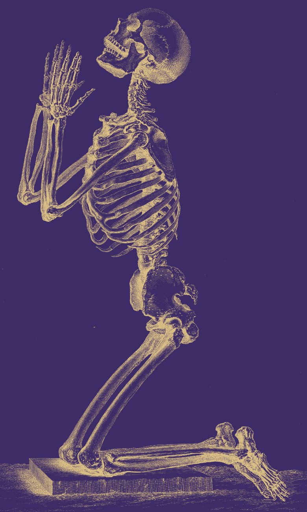
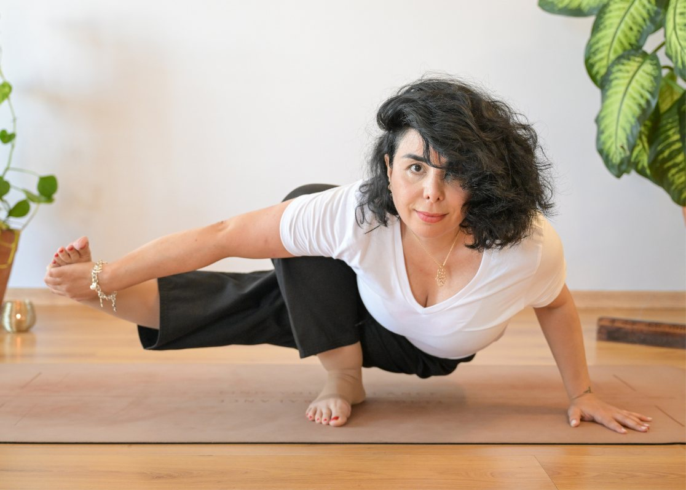
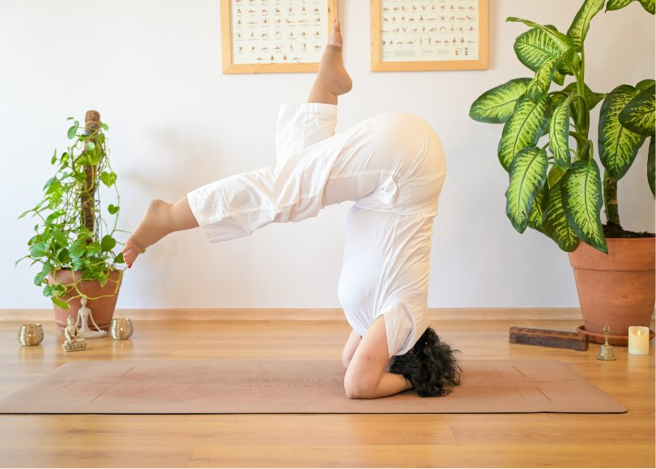

Teacher Training
SHIDO Teacher Training
Philosophy, āsana, prāṇāyāma, anatomy and methodology: the path to teaching.
Dates to be announcedRegister interest
SHIDO develops educational programmes dedicated to the study, teaching and continued development of Yoga.

Three complementary paths, for future teachers, experienced practitioners and Yoga professionals.
Programmes for future Yoga teachers.
In-depth study for experienced practitioners and qualified teachers.
Continued education for Yoga teachers.

SHIDO welcomes experienced international Yoga teachers, senior educators and specialists who contribute to its programmes through masterclasses, seminars and advanced studies.
Educational initiatives exploring the relationship between Yoga, healthy ageing, mobility, balance, breathing and functional strength.

Upcoming sessions are announced first to those who register their interest.

Philosophy, āsana, prāṇāyāma, anatomy and methodology: the path to teaching.

An in-depth module for qualified teachers and experienced practitioners.

With a guest teacher from SHIDO's international faculty.
Questions about a programme? Write to the House.
Contact us